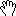

|
- You can move, merge and swap frames switching to
![[SelectMode]](./files/images/actions/SelectMode.gif) SelectMode and dragging them to the new position; alternatively use ShowTree
- You can move a track to another frame switching to
SelectMode and dragging it; alternatively use ShowTree
- You can import file dragging them in program main form; if the drop point is outside a frame, a new one will be created in
that position
- To quickly switch to 
PanMode or ZoomMode, use the PanToggle or ZoomToggle keys defined in PlotKeys options
![[Snapshot]](./files/images/actions/Snapshot.gif) Snapshot action is meant to be used with its key shortcut
- Plot style is customizable: see some examples trying style actions you can then use
![[StoreOptions]](./files/images/actions/StoreOptions.gif) StoreOptions to create the related option file
- When you don't see nothing, press
Cycle plot key (default: TAB) to select a track and fit frame scale to it
- You can easily import plot images in your WYSIWYG editor pasting from clipboard after
Snapshot action
- You can quickly view/hide tracks points using the shortcut to
![[MarkPoints]](./files/images/actions/MarkPoints.gif) MarkPoints action
- You can customize Toolbar buttons editing the
Toolbar option
- To scroll a track, try the continuous pan function (right mouse button during pan mode)
- Press F1 to open context sensitive help
![[Abort]](./files/images/actions/Abort.gif) Abort action is meant to be used to break long tasks (for example, when reading a file)
- During
![[MeasureMode]](./files/images/actions/MeasureMode.gif) MeasureMode you can quickly change the selected track using either the mouse wheel, or the plotkeys, or the Legend
- If during
MeasureMode the numbers rendered on screen are not visible, use ![[ShowPane]](./files/images/actions/ShowPane.gif) ShowPane to see them in the Pane grid
- You can drag and dock the Log and the Pane grid
- Use selection highlighting to spot quickly a certain quantity in the Pane grid during Measure mode
|
|